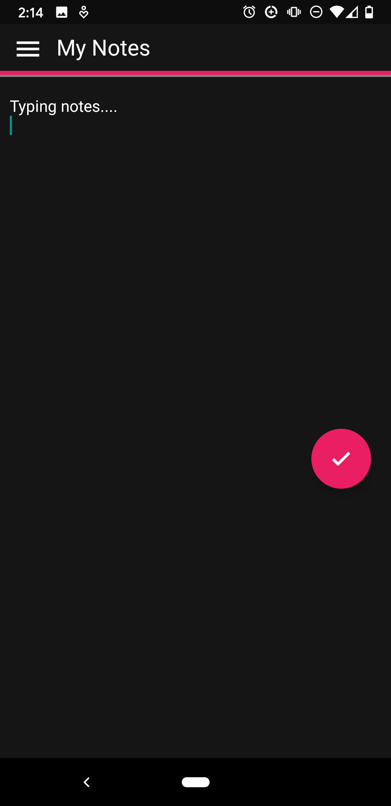

Dubbed "Simple Notes" this is a mobile app that I made in the summer with the goal of developing expertise
in cross-platform development.
View source code | APK download
Production
I researched various cross-platform frameworks, but decided on react-native due to my previous experience with JavaScript, and good documentation. I used Expo along with terminal to help deploy and test my app. Working with react-native was one of the most painful event in my life. The aforementioned documentation was out of date, so I had to rely on source code from GitHub and community forums to figure out the interface. Additionally, many features weren't built in like I expected, such as mavigation, and I had to program it myself. But, after many nights, I managed to finish a functioning notes app.
Next steps
I learned a lot by struggling with react-native, and hope to apply that experience during co-op.
View source code | APK download
Production
I researched various cross-platform frameworks, but decided on react-native due to my previous experience with JavaScript, and good documentation. I used Expo along with terminal to help deploy and test my app. Working with react-native was one of the most painful event in my life. The aforementioned documentation was out of date, so I had to rely on source code from GitHub and community forums to figure out the interface. Additionally, many features weren't built in like I expected, such as mavigation, and I had to program it myself. But, after many nights, I managed to finish a functioning notes app.
Next steps
I learned a lot by struggling with react-native, and hope to apply that experience during co-op.

Viewing notes

Adding notes